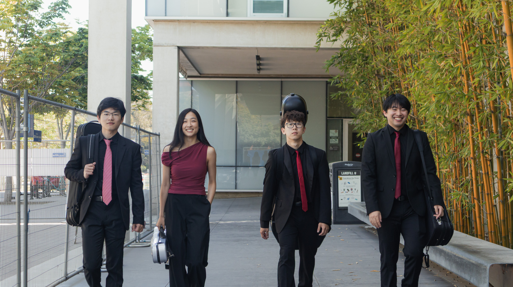
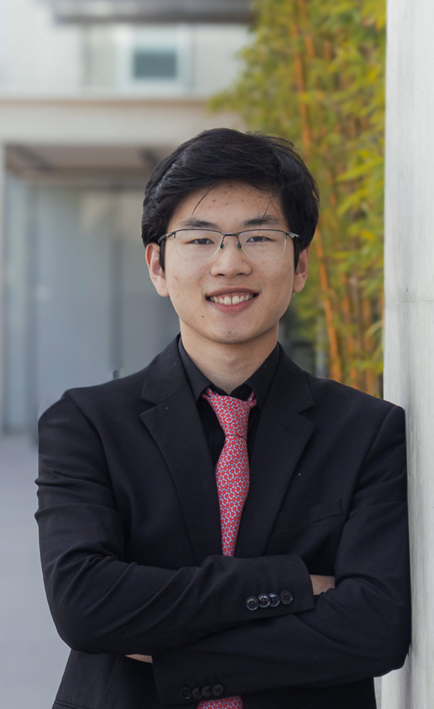
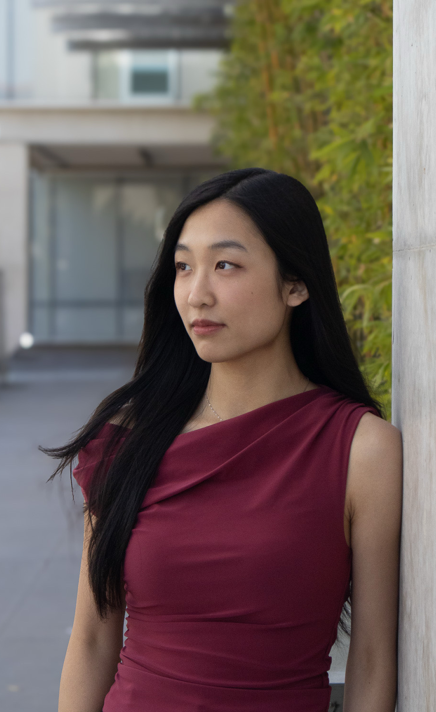
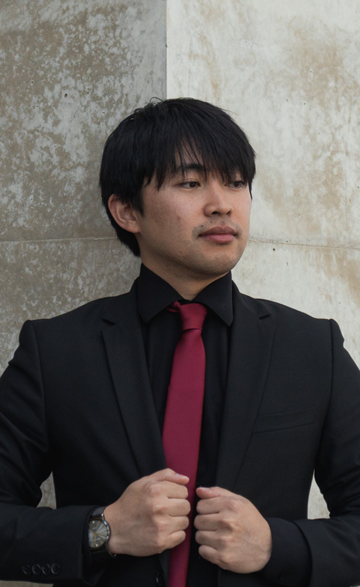
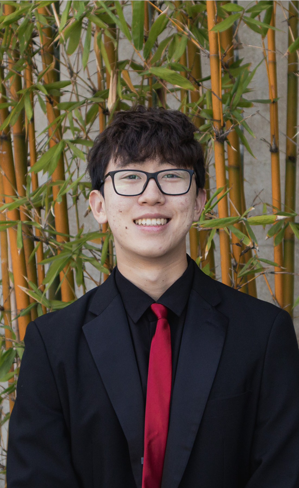
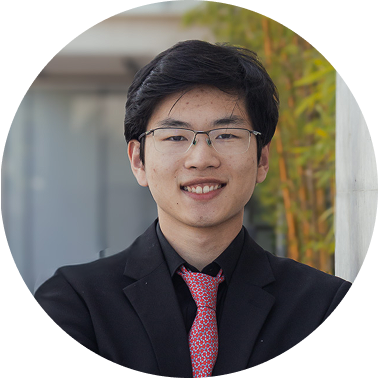
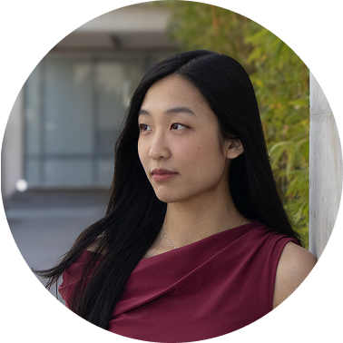
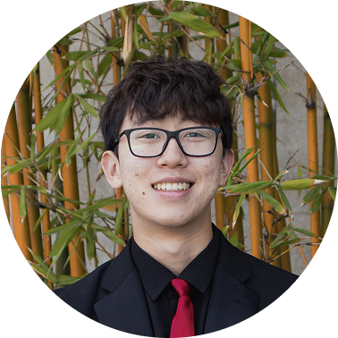

Felix Mendelssohn
String Quartet No. 6 in F Minor
“I hear a person grieving in many colors and frames, trying to process life after another’s death.”
— LUKE VALMADRID, VIOLA
LISTEN WITH US →
[an-uh-tohl] noun
From a Greek word meaning “sunrise,” the moment of first light, often interpreted as “from the east.” In Greek mythology, one of the Horae, who were minor goddesses of the hours.
The group takes its name from Anatole, the Greek Hora presiding over the east winds and the hour of sunrise. Self-directed and student-run, the quartet regularly performs at the Department of Music Undergraduate Forums and has appeared as guests of the La Jolla Symphony & Chorus.
The Anatole Quartet is Jacob Kang (cello), Raymond Li (violin), Alice Guo (violin), and Luke Valmadrid (viola). The members respectively study bioinformatics, neurobiology, design, and medicine.
A selection of works we've performed or are preparing, alongside the recordings that shaped how we hear them, and brief notes on what the music means to us.
Click to learn more about how we ended up here
and who we are outside of music.
Raymond is a third-year undergraduate student studying neurobiology with a minor in music at UC San Diego. He studied violin with Zhu Xinyi and Michael Hustedde, and discovered his passion for chamber music in the mountains of Tuscany, Italy.
Originally from Shanghai, Raymond was a member of the Shanghai City Youth Symphony Orchestra and received certification with honors from the Shanghai Conservatory of Music. At Middlesex School in Concord, MA, he served as director of the Middlesex Music Festival and was a two-time recipient of the Thoreau Medal in Music. At UC San Diego, Raymond performs as concertmaster on rotation with the UCSD Chamber Orchestra and is an active chamber musician. He is especially grateful to be playing on a violin crafted by his grand-uncle, Zheng Quan.
Beyond music, Raymond works at the UCSD Shiley Eye Institute and serves as co-director of pharmacy at the International Health Collective.

Alice Guo is a third-year student at UC San Diego studying cognitive science with a specialization in design and interaction, with minors in music and data science.
Originally from Boston, she studied violin with Virginia Neikrug and Kelly Barr, and performed in the NEC Youth Philharmonic and NEC’s Chamber Music Intensive Performance Seminar, coached by Miriam Fried, Donald Weilerstein, and others. At UC San Diego, Alice has served as concertmaster on rotation for the Chamber Orchestra and performs extensively in chamber music.
Outside of music, she is a UX design lead at Triton Software Engineering and works as a UX and digital media designer at UCSD Business & Financial Services. She is also an incoming intern at the JPMorganChase Design Development Program. Alice enjoys discovering new food spots around San Diego, traveling, concert-going, and taking long walks at the local Trader Joe’s.

Luke Carmichael Valmadrid is a fourth-year medical student, PRIME-Health Equity scholar, violist, and violinist at UC San Diego. He is second chair violist for the California Young Artists Symphony, a substitute for multiple regional symphonies, and violinist for the Aurelion Syzygy piano trio.
At UW-Madison, Luke was violist of the Perlman Ensemble and a First Wave Hip-Hop Scholar, studying with Soh-Hyun Park Altino and Parry Karp of the Pro Arte Quartet. He has performed at the Stanford Chamber Music Seminar and placed at the LJSC Emerging Artists Competition. Luke also has a published poetry chapbook and a fantasy fiction excerpt selected for a Darkstar Library reading at UCSD.
Luke’s research focuses on suicide and substance use disorders. He is greatly looking forward to applying for psychiatry residencies and becoming a physician who addresses both upstream health determinants and downstream health outcomes to maximally protect patients.

Jacob is a first-year bioinformatics major from New Jersey. He has performed with ensembles ranging from the New York Youth Symphony to the NAfME All-Eastern Symphony Orchestra, gracing venues including Carnegie Hall, Lincoln Center, and the New Jersey Performing Arts Center. An all-state musician, Jacob received the 2025 New Jersey Governor’s Award in Arts Education, the highest honor the state can confer in the arts.
His favorite part of music is what he calls the “love of the game” — soaking in the moment, whether playing Bach in a nursing home or chamber music in an old Italian church.
Outside of the practice room, Jacob is exploring career options and feels something within healthcare calls to him. Whether conducting immunology research at the Peters Lab at La Jolla Institute for Immunology, riding as an EMT, or casing in Lumnus Consulting, Jacob is passionate about computational biology and patient care.


Raymond is a third-year neurobiology student at UC San Diego with a minor in music. Originally from Shanghai, he received certification with honors from the Shanghai Conservatory of Music and later directed the Middlesex Music Festival, earning two Thoreau Medals in Music. At UCSD, he performs as concertmaster on rotation with the Chamber Orchestra. Beyond music, Raymond works at the Shiley Eye Institute and serves as co-director of pharmacy at the International Health Collective. He proudly plays on a violin crafted by his grand-uncle, Zheng Quan.

Alice Guo is a third-year cognitive science student at UC San Diego, specializing in design and interaction with minors in music and data science. From Boston, she trained at NEC’s Youth Philharmonic and Chamber Music Intensive Seminar. At UCSD, she serves as concertmaster on rotation with the Chamber Orchestra and performs extensively in chamber music. Outside of music, Alice is a UX design lead at Triton Software Engineering and a designer at UCSD Business & Financial Services.
Luke is a fourth-year medical student, PRIME-Health Equity scholar, violist, and violinist at UC San Diego. He plays with the California Young Artists Symphony, substitutes for multiple regional symphonies, and performs in the Aurelion Syzygy piano trio. A Mimir Festival Emerging Artist and Stanford Chamber Music Seminar alumnus, Luke also has a published poetry chapbook. His research focuses on suicide and substance use disorders as he prepares for psychiatry residency. He is accepting 1–2 violin and viola students for Summer and Fall 2026.

Jacob is a first-year bioinformatics major from New Jersey who has performed at Carnegie Hall, Lincoln Center, and NJPAC with ensembles including the New York Youth Symphony. He is the 2025 recipient of the New Jersey Governor’s Award in Arts Education. Jacob treasures what he calls the “love of the game” — fully immersing himself in music wherever it takes him. Outside the practice room, he conducts immunology research at La Jolla Institute, rides as an EMT, and is passionate about computational biology and patient care.